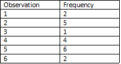
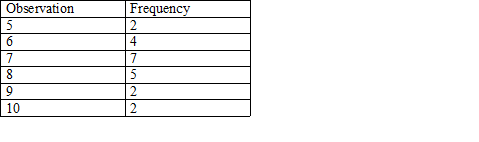
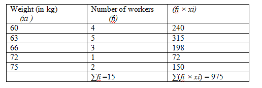
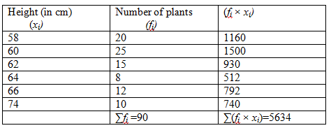
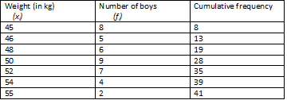
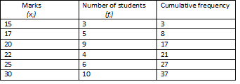
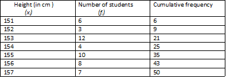
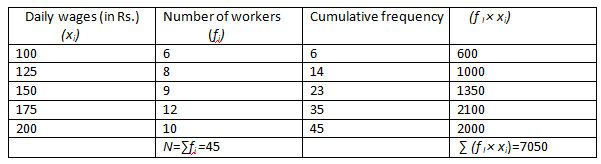

Question:1
Define the terms:
(i) Data
(ii) Raw data
(iii) Array
(iv) Tabulation of data
(v) Observations
(vi) Frequency of an observation
(vii) Statistics
Solution:
(i) Data: Information in the form of numerical figures is known as data.
(ii) Raw data: Data that is obtained in the original form is known as raw data.
(iii) Array: When the raw data is obtained in ascending or descending order of magnitude, it is known as array.
(iv) Tabulation of data: Arranging the data in a systematic way in the form of a table is known as the tabulation of the data.
(v) Observations: Each numerical figure in a data is known as an observation.
(vi) Frequency of an observation: Number of times an observation occurs in the data is known as the frequency of an observation.
(vii) Statistics: The subject that deals with the collection, presentation, analysis and interpretation of the numerical data is known as statistics.
Question:2
A die was thrown 20 times and the following outcomes were recorded:
5, 2, 1, 3, 4, 4, 5, 6, 2, 2, 4, 5, 5, 6, 2, 2,4, 5, 5, 1.
Arrange the above data in ascending order and prepare the frequency table.
Solution:
Data in the ascending order:
1, 1, 2, 2, 2, 2, 2, 3, 4, 4, 4, 4, 5, 5, 5, 5, 5, 5, 6, 6

Question:3
The daily wages (in Rs) of 15 workers in a factory are given below.
200, 180, 150, 150, 130, 180, 180, 200, 150, 130, 180, 180, 200, 150, 180.
Arrange the above data in ascending order and prepare the frequency table.
Solution:
Daily wages in the ascending order:
130, 130, 150, 150, 150, 150, 180, 180, 180, 180, 180, 180, 200, 200, 200
Frequency table:
.png)
Question:4
Write the data given below in ascending order and prepare the frequency table.
7, 8, 7, 10, 6, 8, 9, 7, 10, 5, 7, 6, 8, 5, 6, 7, 8, 9, 7, 6, 7, 8.
Solution:
Data in ascending order:
5, 5, 6, 6, 6, 6, 7, 7, 7, 7, 7, 7, 7, 8, 8, 8, 8, 8, 9, 9, 10, 10
Frequency table:

Question:5
Fill in the blanks:
(i) Data means information in the form of ...... figures.
(ii) Data obtained in the ..... form is called raw data.
(iii) Arranging the numerical figures in ascending of descending order is called an ...... .
(iv) The number of times a particular observation occurs is called its ...... of data.
(v) Arranging the data in the form of a table is called ...... of data.
Solution:
(i) numerical
(ii) original
(iii) array
(iv) frequency
(v) tabulation
Question:6
Find the mean of first five natural numbers.
Solution:
First five natural numbers are 1, 2, 3, 4 and 5.
Mean of the first five natural numbers =
=
Hence, mean of the first five natural numbers is 3.
Question:7
Find the mean of first six odd natural numbers.
Solution:
First six odd natural numbers are 1, 3, 5, 7, 9 and 11.
Mean of the first six natural numbers =
=
Mean of the first six odd natural numbers is 6.
Question:8
Find the mean of first seven even natural numbers.
Solution:
First seven even natural numbers are 2, 4, 6, 8, 10, 12 and 14.
Mean of the first seven even natural numbers =
=
Mean of the first seven even natural numbers is 8.
Question:9
Find the mean of first five prime numbers.
Solution:
First five prime numbers are 2, 3, 5, 7 and 11.
Mean of the first five prime numbers =
=
Mean of the first five prime numbers is 5.6.
Question:10
Find the mean of first six multiples of 5.
Solution:
First six multiples of 5 are 5, 10, 15, 20, 25 and 30.
Mean of the first six multiples of 5 =
Question:11
The following table shows the weights (in kg) of 15 workers in a factory:
| Weight (in kg) |
60 |
63 |
66 |
72 |
75 |
| Number of workers |
4 |
5 |
3 |
1 |
2 |
Calculate the mean weight.
Solution:

Mean weight =
Question:12
The daily wages (in rupees) of 60 workers in a factory are given below:
| Daily wages (in Rs) |
140 |
150 |
160 |
180 |
190 |
| Number of workers |
14 |
16 |
15 |
7 |
8 |
Find the mean daily wages.
Solution:
.png)
Mean daily wages =
Question:13
The heights (in cm) of 90 plants in a garden are given below:
| Height (in cm) |
58 |
60 |
62 |
64 |
66 |
74 |
| Number of plants |
20 |
25 |
15 |
8 |
12 |
10 |
Find the mean height.
Solution:

Mean height =
Question:14
The ages (in years) of 50 players of a school are given below:
| Age (in years) |
14 |
15 |
16 |
17 |
18 |
| Number of players |
15 |
14 |
10 |
8 |
3 |
Find the mean age.
Solution:
(1).png)
Mean age =
Question:15
The heights (in cm ) of 40 boys were measured and recorded and under:
| Height (in cm) |
165 |
170 |
175 |
180 |
| Number of boys |
9 |
8 |
11 |
12 |
Find the mean height.
Solution:
.png)
Mean height =
Question:16
Find the median of:
(i) 3, 11, 7, 2, 5, 9, 9, 2, 10
(ii) 9,25, 18, 15, 6, 16, 8, 22, 21
(iii) 21, 15, 6, 25, 18, 13, 20, 9, 16, 8, 22
Solution:
We have to find the median of the following data.
(i) 3, 11, 7, 2, 5, 9, 9, 2 and 10
Arranging them in ascending order:
2, 2, 3, 5, 7, 9, 9, 10, 11
Number of terms, N= 9
It is an odd number.
Median =
Median=
Median = 5th observation
Median=7
(ii) 9, 25, 18, 15, 6, 16, 8, 22, 21
Arranging them in ascending order,
6, 8, 9, 15, 16, 18, 21, 22, 25
Number of terms, N=9
It is an odd number.
Median =
Median =
Median = 5th observation
Median=16
(iii) 21, 15, 6, 25, 18, 13, 20, 9, 16, 8, 22
Arranging them in ascending order:
6, 8, 9, 13, 15, 16, 18, 20, 21, 22, 25
Number of terms, N = 11
It is an odd number.
Median =
Median =th observation
Median = 6th observation
Median=16
Question:17
Find the median of:
(i) 10, 32, 17, 19, 21, 22, 9, 35
(ii) 55, 60, 35, 51, 29, 63, 72, 91, 85, 82
Solution:
We have to find the median of the following data.
(i) 10, 32, 17, 19, 21, 22, 9, 35
Arranging them in ascending order:
9, 10, 17, 19, 21, 22, 32, 35
Number of terms, N = 8
Median =
Median =
Median =
∴ Median= 20
(ii) 55, 60, 35, 51, 29, 63, 72, 91, 85, 82
Arranging them in ascending order:
29, 35, 51, 55, 60, 63, 72, 82, 85, 91
Number of terms, N =10
Median =
Question:18
Find the median of first 15 odd numbers.
Solution:
First 15 odd numbers are 1, 3, 5, 7, 9, 11, 13, 15, 17, 19, 21, 23, 25, 27 and 29.
Number of terms, N = 15
It is an odd number.
Median =
Question:19
Find the median of first 10 even numbers.
Solution:
First 10 even numbers are 2, 4, 6, 8, 10, 12, 14, 16, 18 and 20.
Number of terms, N=10
Median =
Question:20
Find the median of first 50 whole numbers.
Solution:
First 50 whole numbers are 0, 1, 2, 3, 4 ... and 49.
Number of terms, N= 50
It is an even number.
Question:21
The marks of 15 students (out of 50) in an examination are
20, 22, 26, 31, 40, 19, 17, 19, 25, 29, 23, 17, 24, 21, 35
Find the median marks.
Solution:
Marks of the students (out of 50) in an examination are given below:
20, 22, 26, 31, 40, 19, 17, 19, 25, 29, 23, 17, 24, 21, 35
Arranging the marks in ascending order:
17, 17, 19, 19, 20, 21, 22, 23, 24, 25, 26, 29, 31, 35, 40
Number of terms, N=15
This is an odd number.
Hence, the median marks are 23.
Question:22
The ages (in years) of 10 teachers in a school are
34, 37, 53, 46, 52, 43, 31, 36, 40, 50.
Find the median age.
Solution:
Ages (in years) of 10 teachers in a school are given below:
34, 37, 53, 46, 52, 43, 31, 36, 40, 50
Arranging them in ascending order:
31, 34, 36, 37, 40, 43, 46, 50, 52, 53
Number of terms, N=10
It is an even number.
Hence, the median age is 41.5 years.
Question:23
Find the median weight for the following data:
| Weight (in kg) |
45 |
46 |
48 |
50 |
52 |
54 |
55 |
| Number of boys |
8 |
5 |
6 |
9 |
7 |
4 |
2 |
Solution:
Cumulative frequency table:

Number of terms, N = 41
It is an odd number.
Hence, the median weight is 50 kg.
Question:24
Calculate the median for the following data:
| Marks |
17 |
20 |
22 |
15 |
30 |
25 |
| Number of students |
5 |
9 |
4 |
3 |
10 |
6 |
Solution:
Arranging the terms in ascending order, we have:
.png)
Cumulative frequency table:

Number of terms,
N = 37
Hence, the median is 22.
Question:25
The heights (in cm) of 50 students of a class are given below:
| Height (in cm) |
156 |
154 |
155 |
151 |
157 |
152 |
153 |
| Number of students |
8 |
4 |
10 |
6 |
7 |
3 |
12 |
Find the median height.
Solution:
Arranging the terms in ascending order:
.png)
Cumulative frequency table:

Number of terms,
N = 50
Median =154.5
Question:26
Find the mode of the data:
(i) 10, 8, 4, 7, 8, 11, 15, 8, 6, 8
(ii) 27, 23, 39, 18, 27, 21, 27, 27, 40, 36, 27
Solution:
We have to find the mode of the given data.
Mode - It is that value of the variables that occurs most frequently.
(i) 10, 8, 4, 7, 8, 11, 15, 8, 6, 8
Here, 8 occurs most frequently. Hence, the mode of the data is 8.
(ii) 27, 23, 39, 18, 27, 21, 27, 27, 40, 36, 27
Here, 27 occurs most frequently. Hence, the mode of the data is 27.
Question:27
The ages (in years) of 11 cricket players are given below:
28, 34, 32, 41, 36, 32, 32, 38, 32, 40, 31.
Find the mode of the ages.
Solution:
Following are the ages (in years) of 11 cricket players:
28, 34, 32, 41, 36, 32, 32, 38, 32, 40, 31
Mode is the value of the variable that occurs most frequently.
Here, 32 occurs maximum number of times.
Hence, 32 is the mode of the ages.
Question:28
Daily wages of 45 workers in a factory are given below:
| Daily wages (in Rs) |
100 |
125 |
150 |
175 |
200 |
| Number of workers |
6 |
8 |
9 |
12 |
10 |
Find the median and the mean.
Using empirical formula, calculate its mode.
Solution:

Hence, the median is 150, the mean is 156.67 and the mode is 136.6.
Question:29
The following table shows the marks obtained by 41 students of a class.
| Marks obtained |
15 |
17 |
20 |
22 |
25 |
30 |
| Number of students |
2 |
5 |
10 |
12 |
8 |
4 |
Find the median and mean marks.
Using empirical formula, calculate its mode.
Solution:
(2).png)
Hence, the median is 22, the mean is 21.92 and the mode is 22.16.
Question:30
The following table shows the weight of 12 players:
| Weight (in kg) |
48 |
50 |
52 |
54 |
58 |
| Number of players |
4 |
3 |
2 |
2 |
1 |
Find the median and mean weights.
Using empirical formula, calculate its mode.
Solution:
We will prepare the table given below:
(1).png)
Hence, the median is 50, the mean is 51 and the mode is 48.